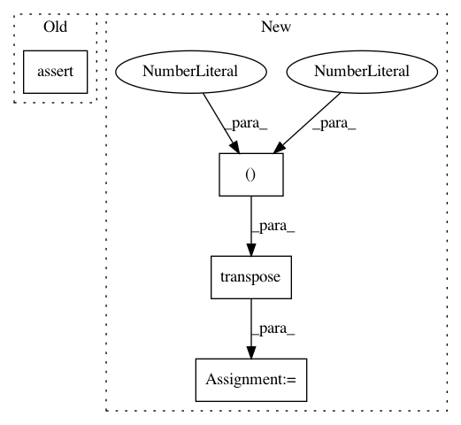

cb3c3798eabae57bab06227d0e77687c14bf099b,geomstats/stiefel.py,StiefelCanonicalMetric,inner_product,#StiefelCanonicalMetric#Any#Any#Any#,84
Before Change
tangent_vec_b = gs.to_ndarray(tangent_vec_a, to_ndim=3)
n_tangent_vecs_b, _, _ = tangent_vec_b.shape
assert n_tangent_vecs_a == n_tangent_vecs_b
inner_prod = gs.einsum("nij,nij->n", tangent_vec_a, tangent_vec_b)
return inner_prod
After Change
base_point_transpose = gs.transpose(base_point, axes=(0, 2, 1))
aux = gs.matmul(
gs.transpose(tangent_vec_a, axes=(0, 2, 1)),
gs.eye(self.n) - 0.5 * gs.matmul(base_point, base_point_transpose))
inner_prod = gs.trace(gs.matmul(aux, tangent_vec_b))
return inner_prod
def exp(self, tangent_vec, base_point):
In pattern: SUPERPATTERN
Frequency: 4
Non-data size: 4
Instances
Project Name: geomstats/geomstats
Commit Name: cb3c3798eabae57bab06227d0e77687c14bf099b
Time: 2018-11-21
Author: ninamio78@gmail.com
File Name: geomstats/stiefel.py
Class Name: StiefelCanonicalMetric
Method Name: inner_product
Project Name: osmr/imgclsmob
Commit Name: 527b35898895eb1befc53de16786d5fb337c8cd2
Time: 2019-02-09
Author: osemery@gmail.com
File Name: keras_/kerascv/models/model_store.py
Class Name:
Method Name: _preprocess_weights_for_loading
Project Name: tensorly/tensorly
Commit Name: 8c271d54da8f609c9b56e9d0ab98d453b3e4f81c
Time: 2021-03-08
Author: taylorpatti@g.harvard.edu
File Name: tensorly/metrics/tests/test_entropy.py
Class Name:
Method Name: test_vonNeumann_entropy_pure_state_CP
Project Name: tensorly/tensorly
Commit Name: 8c271d54da8f609c9b56e9d0ab98d453b3e4f81c
Time: 2021-03-08
Author: taylorpatti@g.harvard.edu
File Name: tensorly/metrics/tests/test_entropy.py
Class Name:
Method Name: test_vonNeumann_entropy_pure_state